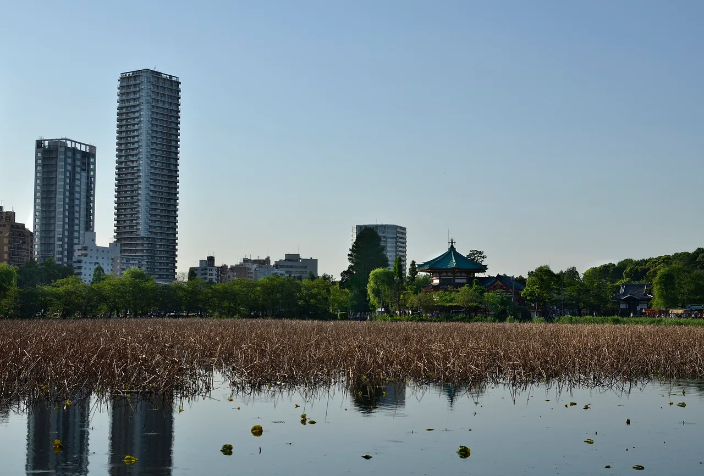

Seven Lucky Gods routes: seven stamps, one sheet, one week
A shichifukujin meguri (七福神めぐり) is a short walking route linking seven shrines or temples, one for each of the Seven Lucky Gods, and the point of it is a single sheet of paper. You buy the sheet at the first stop and have it stamped at all seven. What most visitors do not realise until they are standing at a locked gate is that the majority of these routes are only open for about a week — from 1 January to the 7th or the 10th — and then the stamps stop for eleven months. This guide covers which routes open when, what the sheet is, and the one major route that runs all year round.

Why the window is only a week
The tradition is tied to matsu-no-uchi (松の内), the New Year period when the pine decorations stay up — in Tokyo, the first seven days of January. Most routes open their halls for exactly that stretch and close again.
The Fukagawa route in Kōtō, Tokyo, is the clearest published example. The Kōtō City Tourism Association, which carries the route's information, gives the opening as 1 to 7 January, 9:00 to 16:30, and describes the walk as about two hours at an unhurried pace. Outside that window the seven halls are simply not issuing.
Yanaka's route, which the temples themselves describe as the oldest of the Edo seven-gods pilgrimages, is generally listed as running slightly longer, to 10 January. That extra window is worth knowing, but treat it as unconfirmed: Tōkaku-ji's own page for the route sets out the seven temples and their gods without stating a period at all, and Taitō City's official tourism page for Gokoku-in does not give one either. Every listing that gives 1–10 January is a secondary one.
If you are building an itinerary around a seven-gods route, anchor it to 2–5 January. That avoids the 1 January crush at the shrines, sits safely inside every route's window, and leaves slack if a hall closes early. Arriving on the 8th expecting to collect is the mistake that ends a trip with an empty sheet, and it is the one visitors make most.
What you are actually collecting
This is not the same activity as filling a goshuinchō. A seven-gods route sells you a purpose-made sheet: a shikishi (色紙), a stiff square board pre-printed with seven blank spaces, or in some places a takarabune treasure-ship board, or a scroll. You carry it round; each hall stamps its own space; the finished sheet is a wall object, not a book page.
The Kyoto route publishes its price list openly and revised it on 1 April 2024. Four items are listed at ¥500 each: the stamp book, the daigofu large paper charm (the shikishi), the scroll, and stamping alone. In other words the sheet costs ¥500 and there is a stamping fee at each of the seven stops, so budget for both rather than for a single ticket.
Tokyo routes are less transparent about money. The Fukagawa route issues a sheet and other New Year items — a lucky bamboo branch, clay bells, amulets — but no prices appear on the tourism association's page, and figures circulating on aggregator sites do not trace back to the route. The route association takes enquiries by phone on Mondays, Wednesdays and Fridays, 9:00 to 16:00. Bring cash in small notes and expect to pay per stamp.
Four routes worth planning around
| Route | When it opens | What makes it different |
|---|---|---|
| Fukagawa Seven深川七福神 — Kōtō, Tokyo | 1–7 January, 9:00–16:30 | The best-documented Tokyo route. Seven halls, about two hours on foot, finishing at Tomioka Hachimangū. Each stop is published with the virtue it grants, which most routes do not do |
| Yanaka Seven谷中七福神 — Taitō / Arakawa / Kita, Tokyo | Listed elsewhere as 1–10 January; the temples publish no period | Described by the temples as the oldest of the Edo seven-gods pilgrimages. Unusually, all seven stops are temples rather than shrines. Runs roughly Tabata to Ueno, through the old low-city streets |
| Nihonbashi Seven日本橋七福神 — Chūō, Tokyo | New Year; period not published centrally | The mirror image of Yanaka — every stop is a shrine, not a temple. The Chūō City Tourism Association describes it as walkable in about two hours even ambling, which makes it the easiest to fit into a half day. Run by the Nihonbashi Shichifukukai |
| Miyako Seven都七福神まいり — Kyoto | All year, seals issued daily 9:00–16:00 | The exception that solves the whole problem. Ebisu Shrine, Matsugasaki Daikokuten, Tō-ji, Rokuharamitsu-ji, Sekizan Zen-in, Kōdō and Manpuku-ji. The 7th of every month is the route's feast day, when a gold seal is added at no charge. Sightseeing buses run the route from New Year's Day to the end of January |
The Kyoto route also shows how January gets special treatment even where the route is permanent: for January 2026 the route office extended the gold-seal issue from the single feast day to a full week, 7 to 13 January. Dates for January 2027 had not been published when this guide was checked, so treat the extension as a pattern rather than a promise.
The seven gods and what each one is for
The Fukagawa route publishes a virtue against each of its seven halls, which is the most concrete statement of what you are asking for at each stop.
| God | Fukagawa hall | Virtue as published |
|---|---|---|
| Ebisu恵比須神 | Tomioka Hachimangū | Charm and wealth |
| Daikokuten大黒天 | Enju-in | Prosperity and savings |
| Bishamonten毘沙門天 | Ryūkō-in | Courage, and fortune granted |
| Benzaiten弁財天 | Fuyuki Bentendō | Wealth through the arts |
| Fukurokuju福禄寿 | Shingyō-ji | Popular regard and good fortune |
| Jurōjin寿老神 | Fukagawa Shinmeigū | Fortune and long life |
| Hotei布袋尊 | Fukagawa Inari Shrine | Integrity and magnanimity |
The same seven gods are distributed differently on every route. On the Yanaka route the assignment runs Fukurokuju at Tōkaku-ji, Ebisu at Seiun-ji, Hotei at Shūshō-in, Jurōjin at Chōan-ji, Bishamonten at Tennō-ji, Daikokuten at Gokoku-in and Benzaiten at the Shinobazu Pond Bentendō. Gokoku-in's Daikokuten is worth a pause: Taitō City records that its painted image is said to have been a gift from Tokugawa Iemitsu, the third shogun, and that the standing wooden Daikokuten in front of it is a designated ward cultural property.
Kyoto in January: the Ebisu festival
If you are in Kyoto in early January, the Ebisu stop on the Miyako route holds its own festival, Tōka Ebisu, over five days from the 8th to the 12th. Kyoto City's official tourism body publishes the shape of it, and the hours are unusual — two of the nights do not close at all.
| Date | Name of the day | Gates |
|---|---|---|
| 8 January | Shōfuku-sai — inviting fortune | Open until 23:00 |
| 9 January | Yoi-Ebisu — the eve | Open through the night |
| 10 January | Tōka Ebisu Taisai — the main festival | Open through the night |
| 11 January | Nokori-fuku — the remaining luck | Closes at 24:00 |
| 12 January | Teppuku-sai — the closing | Closes at 22:00 |
What people carry away is not a stamp but a kichō-zasa, a bamboo branch hung with small charms for a thriving business. The dates above are those published for January 2026; the festival is held on the same five dates each year, but the day-of-week pattern for 2027 changes and the shrine had not published it at the time of checking.
Planning a route that actually finishes
Collect first, sightsee second. The binding constraint is the 16:30 close, not the daylight. A route that takes two hours of walking takes four with queues on 2 January.
Take the sheet, not the book. If you already keep a goshuinchō, bring it anyway for ordinary stamps, but buy the route's own sheet for the seven — that is what the spaces are cut for, and at some stops it is the only thing they will stamp during the New Year rush.
Expect sheets to run out. Routes print a fixed run for the season. The later in the window you start, the more likely it is that the first hall has none left and you spend the walk hunting one.
Cash, in coins and small notes. Stamping fees are a few hundred yen per stop and card payment at a temporary New Year desk is close to unheard of.
New to this? Start with what goshuin are and the etiquette → and how to choose a stamp book →. For seasonal designs, see autumn goshuin → and cut-paper kirie goshuin →. Castles run their own paid version, the gojōin →. For the object side of the New Year, see the November rake markets → and the January daruma markets →.
The Japanese you'll actually use
| Japanese | Reading | Meaning |
|---|---|---|
| 七福神めぐり | shichifukujin meguri | the Seven Lucky Gods route |
| 巡拝 | junpai | pilgrimage round — the word on route signage |
| 色紙 | shikishi | the stiff square sheet the seven stamps go on |
| 宝船 | takarabune | treasure ship — an alternative sheet or ornament |
| 大護符 | daigofu | large paper charm — Kyoto's name for the sheet |
| 御宝印 | gohōin | the seal itself on a seven-gods route |
| 御開帳 | gokaichō | the period when the images are shown and stamps issued |
| 松の内 | matsu-no-uchi | the New Year decoration period — why the window is a week |
| 授与所 | juyosho | the desk where charms and sheets are issued |
| 縁日 | ennichi | a deity's feast day — the 7th, for the Kyoto route |
| 吉兆笹 | kichō-zasa | the lucky bamboo branch of the Ebisu festival |
| 売り切れ | urikire | sold out |
Want these to stick? The free JLPT battle quiz drills travel and culture vocabulary like this with spaced repetition.
Common questions
Q. What is a shichifukujin meguri?
A. A short walking route linking seven shrines or temples, one for each of the Seven Lucky Gods. You buy a purpose-made sheet at the first stop and have it stamped at all seven, usually finishing in two to three hours.
Q. When can you do a Seven Lucky Gods route?
A. Most run only in the New Year window. The Fukagawa route in Tokyo opens 1 to 7 January, 9:00 to 16:30. Kyoto's Miyako route is the main exception and issues its seals every day of the year, 9:00 to 16:00.
Q. How much does it cost?
A. Kyoto's route publishes ¥500 each for the stamp book, the large paper charm, the scroll, and for stamping alone, revised on 1 April 2024 — so budget for the sheet plus a fee at each of the seven stops. The Tokyo routes do not publish prices online.
Q. Can I use my goshuinchō for the seven gods?
A. Routes sell their own sheet with seven pre-printed spaces, and during the New Year rush some stops will only stamp that sheet. Bring your book for ordinary stamps, but buy the route sheet for the seven.
Q. Which is the oldest seven-gods route?
A. The Yanaka temples describe their route as the oldest of the seven-gods pilgrimages that spread through Edo from the mid-Edo period. It is also unusual in that all seven stops are temples.
Q. Is the Yanaka route really open until 10 January?
A. That is what listings say, but neither the temples' own route page nor Taitō City's tourism page states a period. Treat 10 January as unconfirmed and plan for the 7th.
Q. What is Tōka Ebisu?
A. The five-day Ebisu festival in Kyoto, 8 to 12 January, at the Ebisu shrine that also forms one stop on the Miyako seven-gods route. The 9th and 10th stay open through the night, and visitors carry away a kichō-zasa bamboo branch rather than a stamp.